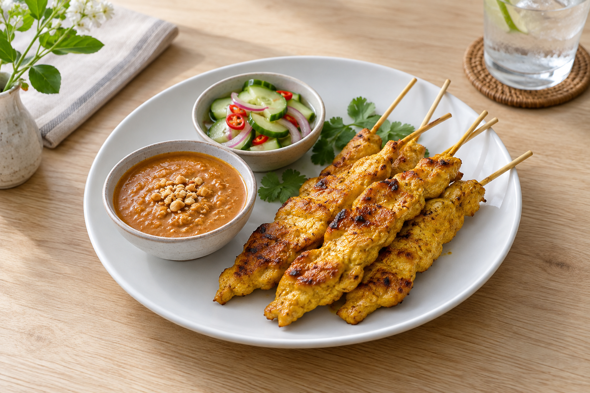
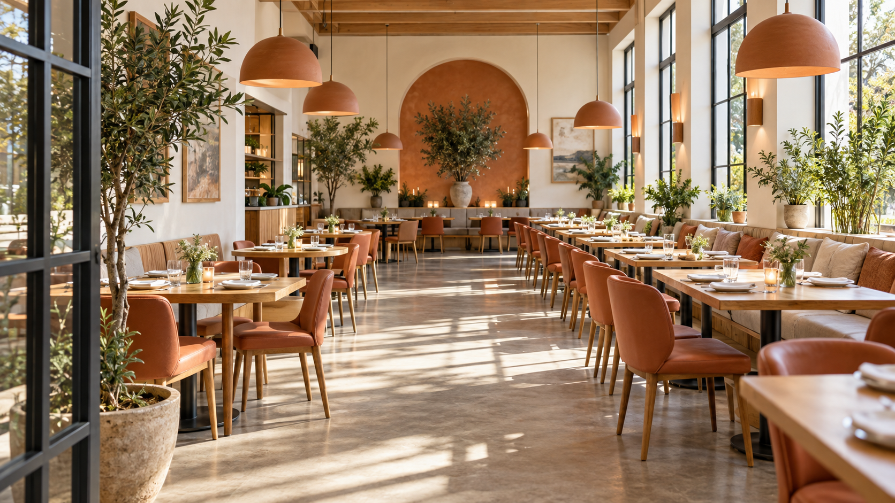

Appetizers

Chicken Satay
“The chicken was tender, and I kept going back for another dip of the peanut sauce.”
Thai flavors. A welcoming table.
Come in for familiar favorites, fresh herbs, and a relaxed meal together.

Fictional customer comments for this classroom website.
Appetizers

“The chicken was tender, and I kept going back for another dip of the peanut sauce.”
Salads

“The smoky beef and spicy dipping sauce made this my favorite plate to share.”
Entrées

“The noodles had just the right balance of sweet and tangy. A squeeze of lime made every bite even better.”
Desserts

“The sweet mango and warm coconut rice were the perfect way to end our meal.”
Drinks

“Creamy, refreshing, and just what I wanted alongside the spicy food.”
Thai Terrace began with a simple idea: make room for good food and good company. We imagined a campus food stall where a quick lunch could turn into a long conversation, and where friends could gather around a table filled with dishes to share.
Our menu brings together the flavors we love: the warmth of a coconut curry, the brightness of lime and fresh herbs, and the smoky taste of grilled meat. Start with chicken satay, pass around a papaya salad, and find your favorite among our noodles and curries. Each dish brings something different to the table.
The cafeteria is part of that experience. It is a place to take a break, catch up with classmates, and enjoy lunch between classes. Whether you stop by on your own or meet a friend, we want you to feel welcome at our table.
For us, a meal is more than the main course. It is the first shared appetizer, the conversation between bites, and the decision to stay a little longer for mango sticky rice. That is the spirit of Thai Terrace: familiar faces, new favorites, and a place to enjoy both.
4300 N. Narragansett Avenue
Chicago, IL 60634
Thai Terrace is a fictional food stall in the Wilbur Wright College cafeteria.
Monday–Friday: 11:00 a.m.–2:00 p.m.
Contact: hello@thaiterrace.example